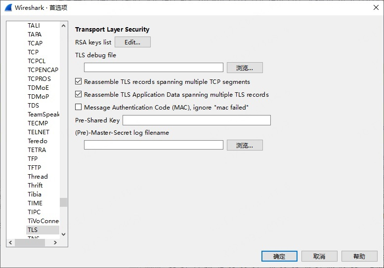
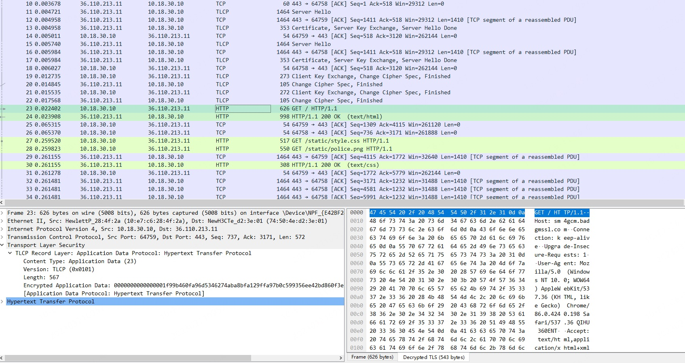

Wireshark 国密调试实践
前言
wireshark 是开源的包分析工具，被广泛应用于网络调试中。在国密开发者的贡献下，wireshark 4.0 已支持导入预主密钥解密国密协议和 RFC8998 的流量。可以用于上述协议的调试和分析。
安装
wireshark的加解密功能依赖于 libgcrypt，libgcrypt 1.9 开始支持 SM3 和 SM4 算法。wireshark 中国密协议的支持依赖于编译时 libgcrypt 的版本，目前 wireshark 官方下载的 windows 版本已内置 libgcrypt 1.10.1，可支持导入预主密钥解密国密协议和 RFC8998 流量。但 linux 和 mac 版本需更新 libgcrypt 版本到 1.9.0 或之后的版本并编译后才可支持。编译步骤可参考编译文档。
调试
wireshark 需导入预主密钥才可解密国密协议或 RFC8998 流量。
导出预主密钥
浏览器导出预主密钥
基于 chromium 的国密浏览器如360安全浏览器，一般都支持通过命令行参数 --ssl-key-log-file=path 的方式导出预主密钥。
网络程序导出预主密钥
使用基于 OpenSSL/Tongsuo 的应用程序可以使用环境变量SSLKEYLOGFILE=sslkey.log的方式导出预主密钥，如SSLKEYLOGFILE=sslkey.log curl -s https://example.com。
导入预主密钥
在 wireshark 的菜单中导入预主密钥，具体路径为编辑-首选项-展开protocol列表-tls，在 (Pre)-Master-Secret log filename 中添加导出的预主密钥。

打开捕获到的国密数据包，即可看到解密后的国密流量或者 RFC8998 流量。
